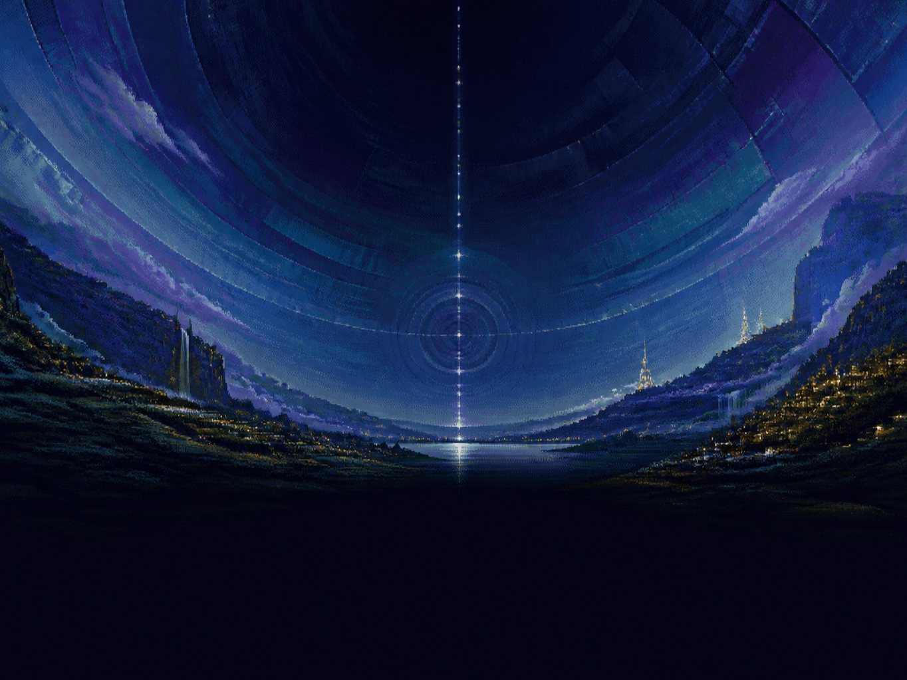

VGA ADVENTURE EDITION
ENTER THE CYLINDER
FICTION ARCHAEOLOGY SOFTWARE
256 COLOR VGA · FM / DIGITAL SOUND
Graphical plate unavailable. Canonical text presentation continues.
>
Switch on the PC. DOS gives way to the VGA picture and an FM overture.
